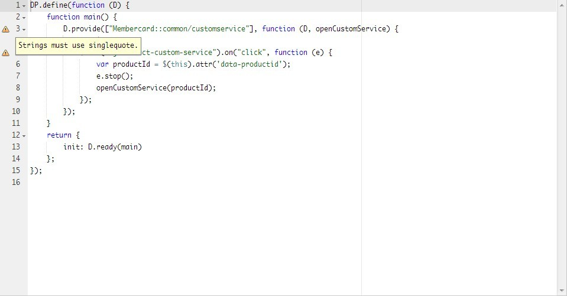

DPLint Online是一个在线的JavaScript代码检查工具，基于JSHint，根据我们的规范需要进行了配置。
如图1-1，将代码复制到编辑器中，在编辑器左侧就会有提示信息，表示本行中包含没有通过检查的不足或错误。
本工具支持自定义配置，如果规范太过严格或者有特殊需求，您可以通过配置使得你的代码通过检测。
例如，规范中，缩进使用4个字符，如有需要改成2个，您可以在您的代码头部加上如下配置：
/*jshint indent:2 */
var fNOP = function () {
console.log(null)
}
fNOP()更多配置可参考JSHint文档。
有任何疑问或问题都可以反馈给zhi.cun。